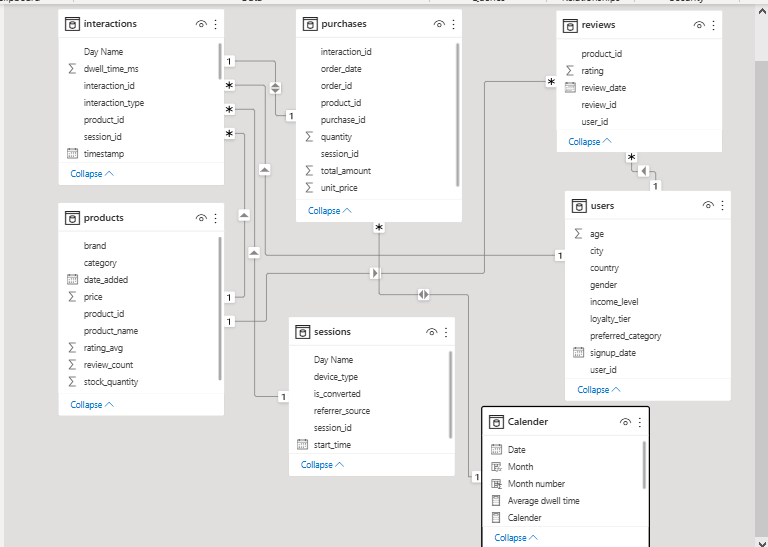
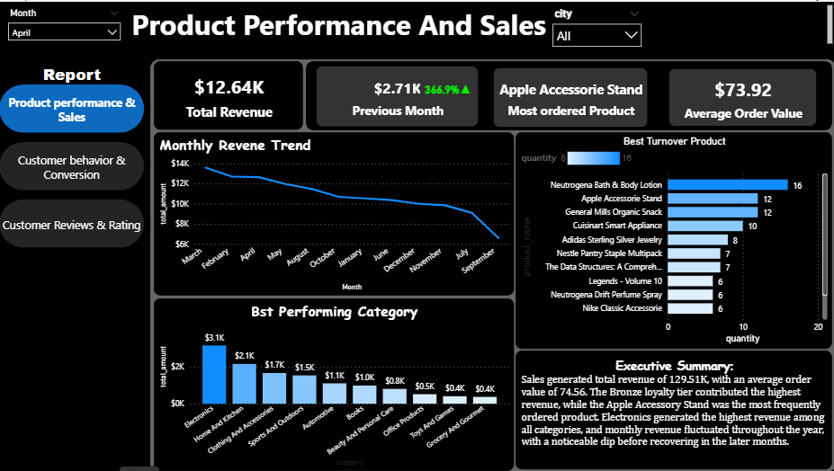
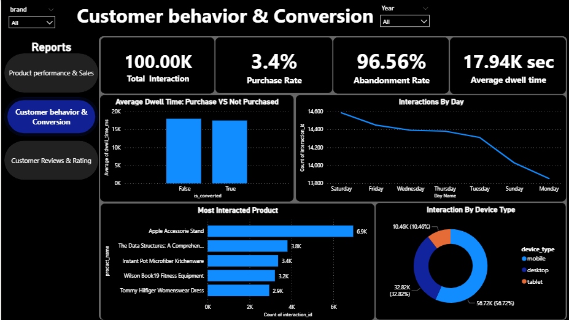
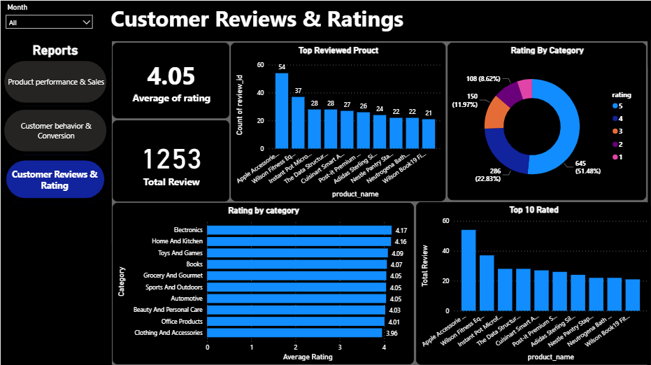

POWER BI PROJECT
E-Commerce Customer Behavior & Sales Performance Analysis
An interactive Power BI analysis exploring sales performance, customer behavior, purchasing conversion, product performance, and customer reviews.
PROJECT OVERVIEW
Turning e-commerce data into business insights
This project analyzes e-commerce customer activity, purchasing behavior, product performance, sales, and customer reviews. I worked across six related tables, prepared the data, built a relational model, performed SQL and DAX analysis, and developed interactive Power BI dashboards.
Business Objective
The goal was to understand how customers interact with products, how those interactions relate to purchasing activity, which products contribute most to sales, and what customer reviews reveal about product experience.
Key Questions
- Which products and categories perform best?
- How do customer interactions relate to purchases?
- Where are potential conversion opportunities?
- What do customer ratings reveal?
Tools & Skills
DATA STRUCTURE
Understanding the tables behind the analysis
The project uses six related tables covering customer activity, products, purchases, reviews, sessions, and users. These tables provide the foundation for analyzing the customer journey from interaction through purchase and post-purchase feedback.
Interactions
Records customer interactions with products.
Products
Contains product attributes and performance information.
Purchases
Contains completed purchase transactions.
Reviews
Contains customer ratings and review activity.
Sessions
Contains information about customer sessions.
Users
Contains customer demographic and profile information.
DATA PREPARATION
Cleaning and preparing the data
I used Power Query to inspect and prepare the source tables before building the Power BI model. The process focused on data types, missing values, consistency, and creating analysis-ready tables.
Source Inspection
Loaded the individual datasets into Power Query and reviewed their structure and fields.
Data Cleaning
Reviewed missing values, inconsistent values, and fields requiring standardization.
Transformation
Prepared and standardized fields required for analysis and data modeling.
Validation
Checked the prepared tables before creating relationships and measures in Power BI.

DATA MODELING
Connecting customer activity, products and transactions
After preparing the tables, I created relationships using shared identifiers such as product ID, user ID, session ID, and interaction ID. This allowed customer activity, purchases, products, sessions, and reviews to be analyzed together.

Products → Interactions
product_id connects products to
customer interactions, allowing product information
to be analyzed alongside engagement activity.
Products → Purchases
product_id connects products to
purchase records, supporting product-level
sales and revenue analysis.
Products → Reviews
product_id connects products with
customer ratings and review activity.
Users → Customer Activity
user_id connects customer attributes
with activity and purchasing behavior.
Sessions → Interactions
session_id connects sessions with
the interaction records generated during them.
Sessions → Purchases
session_id connects purchasing
activity to the sessions in which it occurred.
Interactions → Purchases
interaction_id connects purchase
records with the related interaction where
applicable.
Calendar → Date Analysis
A dedicated Calendar table supports consistent time-based analysis across the model.
THE BUSINESS QUESTIONS
What was I trying to understand?
Sales Performance
Which products and categories are driving revenue, and how is sales performance changing over time?
Customer Behavior
How are customers interacting with products, and where are potential customers dropping out of the purchasing journey?
Customer Experience
What do customer ratings and review activity reveal about product experience?
01 — PRODUCT PERFORMANCE & SALES
Product Performance & Sales

KEY INSIGHTS
What the analysis revealed
Revenue Concentration
The analysis identifies the products and categories contributing most strongly to revenue, helping highlight where sales performance is concentrated.
Product Performance
Comparing product-level sales activity helps distinguish stronger performers from products that may require further investigation.
Sales Trends
Time-based analysis provides visibility into changes in purchasing activity and revenue, supporting further investigation of seasonal or monthly patterns.
These findings are descriptive. Further analysis would be required to determine why particular products or categories outperform others.
02 — CUSTOMER BEHAVIOR & CONVERSION
Customer Behavior & Conversion

KEY INSIGHTS
What the analysis revealed
Purchase Rate
The dashboard shows a purchase rate of 3.4% based on the project's defined interaction-to-purchase calculation.
Abandonment Rate
The dashboard reports an abandonment rate of 96.56%, indicating that most tracked interactions did not progress to a completed purchase under the project's calculation.
Customer Engagement
Average dwell time is used as an engagement metric to help investigate how much time customers spend interacting with products.
Purchase Rate and Abandonment Rate are based on the definitions used in this project. A more granular conversion analysis could compare unique users or sessions at each stage of the funnel.
03 — CUSTOMER REVIEWS & RATINGS
Customer Reviews & Ratings

KEY INSIGHTS
What the analysis revealed
Average Rating
Customers gave an average rating of 4.05 out of 5, providing an overall view of customer feedback across the reviewed products.
Review Activity
The dashboard contains 1,253 customer reviews, providing a useful base for examining product feedback and rating patterns.
Rating Context Matters
Product ratings are more meaningful when considered alongside review volume, since a high rating based on very few reviews may be less representative.
MY APPROACH
From raw data to insights
Data Preparation
Explored and prepared the source data using Power Query and SQL before analysis.
Data Modeling
Built relationships between the relevant tables using product, user, session, and interaction identifiers.
Analysis
Used SQL and DAX to investigate customer behavior, interactions, purchases, sales, and review metrics.
Visualization
Built interactive Power BI dashboards to communicate KPIs, trends, comparisons, and business findings.
Tools Used
PROJECT SUMMARY
Turning data into business insights
This project transformed raw e-commerce data into an interactive analytical report covering sales performance, customer behavior, purchasing activity, and customer reviews.
Sales
Analyzed product and category performance to understand where revenue and purchasing activity were concentrated.
Customers
Examined customer interactions and purchase behavior to identify patterns in engagement and conversion.
Reviews
Analyzed customer ratings and review activity to provide additional context around product experience.